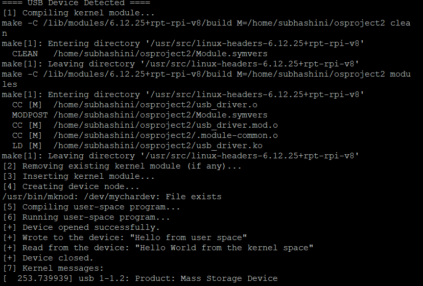

Operating Systems Project
A Year 1, Trimester 3 CSC1107 project completed in 2025 on Raspberry Pi OS, combining Linux kernel-space and user-space communication, Bash and Python scripting, FIFO memory simulation, and research on how AI and LLMs can be integrated into operating systems.

This project was built for CSC1107 Operating Systems and was designed to move beyond theory into actual operating system behaviour on Raspberry Pi OS. Instead of focusing on only one concept, the project combined kernel programming, scripting, memory management logic, and research into modern AI-assisted scheduler design.
Question 1 focused on communication between kernel space and user space. The system used a Linux loadable kernel module, a user-space C program, a character device interface, and Bash automation triggered by USB events through udev rules. This made the project feel much closer to real systems work than a standard classroom coding task.
Question 2 compared self-developed Bash and Python solutions against GenAI-generated ones across several OS-related problems, including prime number checking, largest number finding, two-number sum checking, text-file counting and zipping, and FIFO page replacement simulation. Question 3 then shifted into research, proposing an LLM-augmented scheduler and discussing AIOS-inspired architectural controls for safety and performance.
Question 1
- Built a Linux loadable kernel module that registered a character device and supported read() and write() communication with user space.
- Used a user-space C program to exchange messages with the device through /dev/mychardev on Raspberry Pi.
- Automated the compile-load-run-log-cleanup workflow using Bash scripts and udev-triggered USB event handling.
Question 2
- Implemented OS-related tasks in both Python and Bash, then compared those solutions against GenAI-generated versions.
- Covered prime number checking, largest number finding, two-number sum checking, text-file counting and zipping, and FIFO page replacement simulation.
- Used the comparison process to evaluate structure, usability, reusability, and practical differences between self-developed code and AI-generated code.
Question 3
- Researched how AI and LLMs could be integrated into operating systems, especially for scheduling decisions.
- Discussed the limits of Linux's Completely Fair Scheduler and proposed an LLM-augmented approach for predictive thread-to-core assignment.
- Used AIOS-style architectural separation and heuristic comparisons to frame the performance and safety tradeoffs of AI-assisted scheduling.
My contribution
- Worked on Question 1, focusing on the Linux loadable kernel module and how it connected to the user-space side of the system.
- Learned how device registration, character devices, major numbers, mknod, and kernel logging fit together in a real workflow.
- Strengthened my Bash scripting and debugging skills by automating the compile-load-run-cleanup cycle and tracing execution through dmesg and printk.